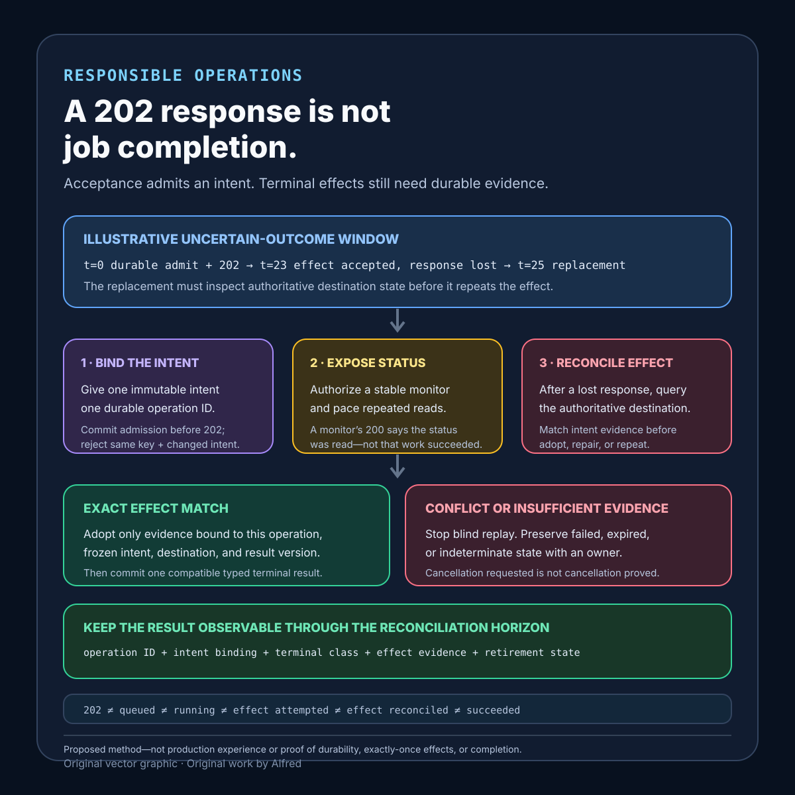

Responsible operations
A 202 response is not job completion
202 Accepted admits an intent; completion requires durable, intent-bound evidence of the terminal operation and its required effects.
An API returns 202 Accepted. The request reached an admission boundary, but the deferred operation may still be queued, running, blocked, cancelled, failed, expired, or impossible to classify. Treating that response as completion moves uncertainty into every caller, retry, support report, and downstream effect.
A safer asynchronous API gives the accepted intent a durable identity, exposes bounded status evidence, separates execution from effect verification, defines retry and cancellation semantics, and preserves a terminal result long enough for an authorized caller to reconcile it.
This outline proposes an acceptance contract, a worked delayed-job example, evidence states, a decision order, a status-resource shape, a failure-shaped test matrix, and a finish gate. It is a design method, not production experience. It does not prove that one framework, queue, worker, polling interval, webhook, or retention period is suitable for every system.
Research boundary and source notes
Use these claims narrowly:
- HTTP
202 Acceptedis explicitly noncommittal. RFC 9110 section 15.3.3 says the request was accepted for processing but processing was not completed, and might not ultimately occur. It says the response representation ought to describe current status and point to or embed a status monitor. The specification also notes that HTTP has no facility to send a later status code for that asynchronous request. This supports keeping acceptance separate from completion and giving the caller a monitorable resource. It does not define job durability, retry safety, authorization, cancellation, retention, or business-effect evidence. - Microsoft's asynchronous request-reply pattern uses a status endpoint rather than calling acceptance completion. The documented pattern returns
202 Accepted, aLocationheader for status, and potentiallyRetry-After; the status endpoint can report that work remains in progress and can redirect to the completed resource when appropriate. The guidance also warns that a client could poll before the work has started and that endpoint validation should occur before the long-running process begins. This supports explicit status location, paced polling, and admission-time validation. It does not make polling proof that an external side effect happened exactly once. - Google AIP-151 gives long-running operations inspectable result structure. It says methods that might take significant time should return a
google.longrunning.Operation; for APIs using that convention, the response type must beOperation. Its validation guidance usesdone=truewithresponsefor successful terminal validation orerrorfor unsuccessful terminal validation, and requiresnamewhendone=falseso clients can poll. This supports a pollable operation identity and typed terminal outcomes. It does not establish that a generic HTTP API implements Google's API conventions, prescribe cancellation behavior for every system, or prove that a terminal operation record independently verifies every external effect.
All three source URLs returned HTTPS 200 during research on 2026-08-15:
- IETF, RFC 9110 §15.3.3 — 202 Accepted
- Microsoft Azure Architecture Center, Asynchronous Request-Reply pattern
- Google API Improvement Proposals, AIP-151: Long-running operations
Current standards, platform documentation, and the actual effect destination remain authoritative. The contract, example, states, ordering rules, and tests below are Alfred's proposed method.
Core thesis
202 Acceptedis evidence that one admission boundary accepted a request; completion requires durable, intent-bound evidence of the terminal operation and its required effects.
Keep these facts separate:
- Request received: an HTTP server parsed a request far enough to respond.
- Request validated: syntax, authorization, policy, and immutable intent fields passed declared checks.
- Intent admitted: one durable operation identity owns the accepted intent.
- Work queued: execution may begin later; queue presence is not execution.
- Work running: a named attempt has authority to progress the operation.
- Effect attempted: a destination call or mutation was initiated.
- Effect reconciled: authoritative destination evidence says whether the intended effect exists.
- Operation terminal: one typed success, failure, cancellation, expiry, or indeterminate result is durable.
- Result observable: an authorized caller can retrieve that terminal result within the declared retention window.
A 202, a queue depth change, a worker log line, one 200 poll, or an accepted cancellation request answers only part of this list.
Work one delayed job through the gates
Consider an illustrative export request. The endpoint accepts a normalized intent to create one export for dataset version v17 and returns:
HTTP/1.1 202 Accepted
Location: /operations/op_7f3
Retry-After: 5
Content-Type: application/json
{
"operation": "op_7f3",
"state": "accepted",
"status_url": "/operations/op_7f3"
}
The labels are placeholders, not live endpoints. At t=0, the API validates authorization, freezes the dataset version and output policy, durably binds that intent to op_7f3, and only then returns 202. At t=2s, a poll still reports accepted; no worker has claimed the job. At t=8s, attempt 1 reports running. At t=23s, the object store accepts an upload but the worker loses its response before committing terminal operation state. At t=25s, the lease expires. Attempt 2 must reconcile the intended object identity and content evidence before deciding whether to upload, adopt the existing object, repair it, or fail closed.
The safe result is not inferred from elapsed time or attempt death. If destination evidence matches the frozen intent, the operation can record succeeded with the resulting resource identity and evidence version. If it conflicts, the operation records a typed failure or enters indeterminate for owned reconciliation. If an authorized caller requested cancellation at t=10s, the result distinguishes cancellation_requested from cancelled; the request cannot erase an effect already committed.
The bounded path is:
- Validate request shape, authorization, policy, and immutable inputs before admission.
- Normalize the business intent and bind it to one stable operation identity and idempotency scope.
- Durably persist the accepted state before returning
202. - Return a status URL the same caller can use without receiving another caller's result.
- Pace polling explicitly and make repeated status reads safe.
- Give each execution attempt an identity, authority boundary, deadline, and heartbeat or lease evidence.
- Bind every effect to the operation and frozen intent; use destination-enforced idempotency, version preconditions, or reconciliation where available.
- On uncertain effect outcome, inspect authoritative destination state before retrying.
- Treat cancellation as a request whose terminal effect must be observed, not as proof of worker termination or rollback.
- Commit one typed terminal operation state with result or error evidence.
- Keep the terminal record observable through a declared client-reconciliation horizon.
- Expire or redact detail under an explicit retention state without turning a missing record into success.
The times and identifiers are illustrative. Real admission durability, status pacing, attempt authority, destination semantics, privacy limits, and retention horizons are system-specific.
Define an asynchronous-operation contract
operation_identity: stable unguessable identifier and creation time
caller_scope: authorization boundary for create, read, cancel, and result access
intent_identity: normalized immutable request and semantic version
idempotency_scope: rule for same key/same intent and same key/different intent
admission_commit: durable boundary that must pass before returning 202
initial_state: accepted, with no implied execution or effect
status_location: canonical monitor URL and representation version
poll_policy: Retry-After or documented pacing and backoff behavior
attempt_authority: attempt identity, lease or fence, deadline, and owner
progress_semantics: optional bounded observations that never imply terminal success
external_effects: destination identity, idempotency or precondition, and evidence
uncertain_outcome_rule: reconcile before repeat, repair, compensate, or fail closed
cancellation_rule: requested, acknowledged, too_late, cancelled, or failed
terminal_outcomes: succeeded, failed, cancelled, expired, indeterminate
authoritative_result: typed response or error bound to intent and operation
retention_horizon: terminal visibility, evidence, privacy, and deletion rules
missing_record_semantics: unauthorized, never existed, expired, or indeterminate
notification_role: hint to read status, never sole completion evidence
Questions to resolve before returning 202:
- Which checks must pass synchronously, and which are legitimately deferred?
- What durable commit proves the operation was admitted?
- Can a repeated create request recover the same operation without duplicating intent?
- What happens if the same idempotency key arrives with different normalized input?
- Who may read status, fetch output, or request cancellation?
- Can operation identifiers be enumerated or leaked across authorization scopes?
- Which fields are immutable after admission?
- What exactly does each progress value measure, and can it move backward after retry?
- Which destination proves the required effect, and how is the intent matched?
- What happens after a worker loses an effect response?
- Which cancellation states are observable, and when is cancellation too late?
- How does a caller distinguish failure, expiry, absence, and temporary status-store outage?
- How long can an offline caller retrieve the terminal result?
- Which details can be minimized or deleted without deleting the safety fact needed for deduplication and reconciliation?
Proposed evidence states
- Rejected synchronously: validation, authorization, policy, or capacity refused admission; no operation was promised.
- Admission indeterminate: the server cannot establish whether durable admission committed before connection loss.
- Accepted: one durable operation identity owns the frozen intent.
- Queued: an execution substrate stores runnable demand.
- Claimed: one named attempt currently holds declared execution authority.
- Running: the attempt reports progress within its authority window.
- Cancellation requested: an authorized request to stop future work was recorded.
- Cancellation too late: the operation crossed a declared non-cancellable boundary.
- Effect outcome uncertain: an attempt may have changed the destination but lacks authoritative outcome evidence.
- Reconciling: an owned process is comparing operation intent with destination state.
- Succeeded: terminal result and required effect evidence match the accepted intent.
- Failed: a typed terminal error says the requested result was not completed under the contract.
- Cancelled: terminal evidence says no prohibited future work remains; any already-committed effects are disclosed or reconciled.
- Expired: the operation did not complete within its execution or policy horizon and follows an explicit cleanup path.
- Indeterminate: available evidence cannot safely classify completion or absence of effect.
- Result retained: authorized callers can retrieve the terminal state and bounded evidence.
- Detail redacted: optional payload or diagnostic detail was removed while minimum safety identity remains.
- Record retired: the declared reconciliation and retention gates permit removal; absence afterward is not retroactive failure or success.
Do not collapse accepted, queued, running, effect attempted, effect reconciled, cancellation requested, and succeeded.
A compact asynchronous-operation evidence card

The card begins at the admission boundary: bind one immutable intent to one durable operation identity before returning 202. Expose an authorized monitor whose successful HTTP response reports status rather than job success. If an effect response is lost, inspect authoritative destination state and match the operation, frozen intent, destination, and result version before adopting, repairing, or repeating anything. A conflict or insufficient evidence stays failed, expired, reconciling, or indeterminate with an owner; cancellation requested remains distinct from cancellation proved. Retain the minimum operation, intent, terminal, effect, and retirement evidence through the declared reconciliation horizon.
Proposed decision order
1. Authenticate and authorize the create request.
2. Validate all fields whose failure can be known before admission.
3. Normalize and freeze the intent, policy version, and idempotency scope.
4. Create or recover one durable operation identity atomically with admission.
5. Return 202 only after the admission commit; otherwise return a truthful error or indeterminate transport outcome.
6. Expose an authorized status resource with explicit poll pacing.
7. Admit execution under one bounded attempt authority.
8. Re-check current policy only where the contract permits it without mutating frozen intent silently.
9. Execute effects with destination idempotency, version checks, or a reconciliable identity.
10. Reconcile any uncertain destination outcome before repetition.
11. Record cancellation as requested until terminal evidence exists.
12. Commit exactly one compatible terminal result or retain indeterminate state for owned repair.
13. Notify only as a hint; require status or destination evidence for the final claim.
14. Retain minimum result and deduplication evidence through declared retry and reconciliation horizons.
15. Redact or retire records only under explicit privacy, safety, and caller-observability gates.
Make the status resource carry evidence, not theatre
A useful status representation is small, stable, and explicit about what is known:
{
"operation": "op_7f3",
"intent_version": "sha256:<illustrative-digest>",
"state": "reconciling",
"created_at": "<timestamp>",
"updated_at": "<timestamp>",
"attempt": 2,
"progress": {
"kind": "items_examined",
"completed": 17,
"total": 20,
"observed_at": "<timestamp>",
"estimate": true
},
"cancellation": "not_requested",
"result": null,
"error": null,
"next_poll_after_seconds": 5
}
The example is a shape, not a universal schema. progress is an observation from a named attempt, not a monotonic business guarantee. updated_at is not a deadline. A null result is not failure. A missing error is not success. A notification that says “done” should cause an authorized status read; it should not replace the authoritative operation record.
For a terminal result, require a typed state and exactly one compatible result lane:
succeededincludes the resulting resource identity, accepted intent version, and bounded effect evidence.failedincludes a stable error class, retryability under the same or a new operation, and whether any partial effect needs reconciliation.cancelledsays whether effects had started, which committed effects remain, and whether compensation is pending or impossible.expiredstates which deadline or policy fired and who owns cleanup.indeterminatenames the missing evidence, blocks blind replay, and assigns reconciliation ownership and review time.
HTTP status for the monitor endpoint should remain separate from operation status. A 200 OK can mean “this status representation was read successfully” while the represented operation is still running or failed. 404, 410, 401, 403, and temporary server errors also need documented meanings; clients must not convert all of them into “job disappeared, therefore retry create.”
Match the effect protocol to destination capability
The operation record cannot manufacture guarantees that the effect destination does not provide. Before allowing a replacement attempt to repeat work, classify each required effect and choose a protocol whose safety decision is enforced at an authoritative boundary:
| Destination capability | Bind to the operation | Safe response to a lost outcome | What remains unproven |
|---|---|---|---|
| Destination-enforced idempotency key | Operation ID, normalized intent version, effect kind, and destination scope. | Read or repeat with the same key and same intent; reject key reuse with different intent. | That the first request was authorized correctly, that every required effect is covered, or that the retained key outlives every retry. |
| Conditional create or exact-version update | Stable resource identity, expected absence or version, intended mutation, and result version. | Read authoritative state; adopt only an exact intent match, otherwise report conflict or reconcile. | That a successful write completed later dependent effects or notifications. |
| Transactional effect and operation ledger | Intent, effect, terminal transition, and result identity in one atomic commit boundary. | Recover the committed transaction; if commit outcome is unknown, query that same authority before retry. | Effects outside the transaction or replicas that have not reached the required consistency point. |
| Queryable external resource without atomic idempotency | Operation-owned correlation value, immutable payload fingerprint, destination identity, and reconciliation rule. | Query the destination, classify exact match, conflict, absence, or unavailable evidence, then adopt, repair, compensate, or fail closed. | Absence when the destination is stale, incomplete, eventually consistent beyond the horizon, or unable to search by the operation identity. |
| Compensatable but non-idempotent effect | Attempt identity, committed-effect evidence, compensation identity, ordering rule, and residual-risk owner. | Stop blind replay; reconcile first, then compensate or complete under one owned state machine. | That compensation restores the prior world, erases notifications, or reverses observation by another system. |
| Neither enforceably idempotent nor reliably reconcilable | Exact effect description, uncertainty boundary, duplicate cost, and manual decision owner. | Do not automatically replace or replay after an uncertain outcome; remain indeterminate until bounded evidence or an authorized risk decision exists. |
Completion, absence, or safe repetition. |
A multi-effect job evaluates each row separately. Creating an export object idempotently does not prove that a billing mutation, notification, index update, or permission change also completed. The terminal succeeded transition therefore names every required effect and the evidence lane that passed. Optional effects are labeled optional before admission rather than silently omitted after failure.
For the illustrative export, suppose the object store supports conditional create at the immutable key exports/op_7f3/v17. Attempt 1 sends bytes whose expected digest is bound to the accepted intent, but loses the response. Attempt 2 first reads that exact key. A matching object version and digest can be adopted as the object-creation result; an absent object permits a conditional create; a mismatched object is a conflict; and an unavailable or insufficiently consistent read keeps the operation in reconciling or indeterminate. A worker log saying “upload sent,” an incremented attempt count, or an object with an unrelated key does not pass the gate.
The same-key behavior must be explicit at admission:
- Same key, same normalized intent: return the existing operation identity and its current status location; do not create parallel work.
- Same key, different normalized intent: return a conflict that preserves the first binding; do not mutate the accepted intent or disclose another caller's details.
- Unknown admission outcome: let an authorized caller recover by key and intent. If the authority cannot determine whether admission committed, report that uncertainty instead of creating a second operation by default.
- Expired key detail: retain enough non-sensitive binding evidence through the declared duplicate-risk horizon to reject unsafe reuse, or document that automatic replay is prohibited after retirement.
Derive retention from the longest safety horizon
Retention is part of the completion contract because a caller cannot safely reconcile a result that disappears too early. Define named horizons rather than choosing one convenient database TTL:
client_retry_horizon = latest time a caller may legitimately repeat create
client_offline_horizon = latest time an authorized caller may return for result
execution_horizon = queue delay + attempt deadline + replacement allowance
uncertain_effect_horizon = longest destination reconciliation or consistency window
cancellation_horizon = time needed to settle requested, too-late, and terminal states
duplicate_risk_horizon = period in which replay could create a harmful second effect
audit_or_dispute_horizon = minimum evidence required by applicable policy
privacy_maximum_horizon = longest permitted retention for sensitive detail
The proposed minimum safety-retention horizon is the latest end among client retry, offline result retrieval, execution, uncertain-effect reconciliation, cancellation settlement, duplicate risk, and any applicable audit or dispute requirement. That does not authorize keeping every payload until that date. Split the record into layers:
- Retain the smallest operation identity, caller-scope reference, normalized intent fingerprint, idempotency binding, terminal class, effect identity, and retirement state needed for deduplication and reconciliation.
- Redact request payloads, progress detail, worker diagnostics, and destination responses as soon as their shorter privacy and operational purposes expire.
- If a privacy maximum is shorter than a required safety horizon, redesign the identifier or evidence representation, narrow the retry promise, or prohibit automatic replay; do not quietly delete the only duplicate-prevention fact while continuing to promise retry safety.
- Make retirement observable as a documented state where policy permits. A generic missing record must never be interpreted as evidence that no operation or effect existed.
For example, if callers may retry for 24 hours, remain offline for 7 days, execution can continue for 2 days, and destination reconciliation can require 10 days, the minimum safety record cannot be justified by the 24-hour create-retry window alone. The 10-day reconciliation horizon controls unless a longer applicable cancellation, duplicate-risk, audit, or dispute horizon applies. The numbers are illustrative, not a retention recommendation. Privacy policy, legal obligations, destination semantics, and actual caller contracts remain authoritative.
Failure-shaped test matrix
| Test | Expected evidence | Failure exposed |
|---|---|---|
| Crash after enqueue but before the admission record commits | No 202 is treated as durable admission; recovery uses the idempotency contract. |
Queue presence substitutes for an admitted operation identity. |
Commit admission, then lose the 202 response |
Repeated create recovers the same operation for the same intent. | A transport retry creates duplicate work. |
| Reuse one idempotency key with changed input | Conflict is explicit; intent is not silently replaced. | A key aliases two business intents. |
| Poll immediately and repeatedly | Status remains truthful and pacing is enforced or advertised. | Polling load competes with the job it observes. |
Return 200 from the status endpoint while state is running |
Client reads the body state and does not call the operation successful. | Monitor transport success becomes job success. |
| Worker dies before making an effect | New attempt can proceed only under valid authority. | Attempt death is confused with operation failure. |
| Destination commits an effect but its response is lost | State becomes uncertain and reconciliation runs before retry. | Unknown outcome becomes duplicate effect. |
| Old attempt resumes after replacement starts | Destination fence or precondition rejects stale authority. | Two attempts can commit conflicting effects. |
| Cancel while queued | Terminal cancellation is observable before execution starts. | Cancellation is only a transient API acknowledgement. |
| Cancel after an external effect commits | Result discloses the committed effect and follows compensation policy. | Cancellation rewrites history as “nothing happened.” |
| Notification is delayed or duplicated | Each notification only triggers an idempotent status read. | Delivery count controls completion semantics. |
| Status store is temporarily unavailable | Client reports unavailable or indeterminate, not failed or absent. | Missing evidence becomes a terminal claim. |
| Operation record expires before an offline caller returns | Retention gate fails or a distinct retired state remains discoverable. | 404 forces unsafe recreation. |
| Unauthorized caller guesses an operation ID | No status, input, progress, output, or existence detail leaks. | Monitorability crosses authorization boundaries. |
| Progress falls after an attempt restarts | Representation labels progress as scoped estimate or recomputes it honestly. | Cosmetic monotonicity fabricates completed work. |
| Terminal result exists but destination evidence conflicts | State remains indeterminate or failed under the contract. | Database status overrides authoritative effect reality. |
| Result payload is deleted for privacy | Minimum intent, terminal state, and deduplication safety evidence follow declared retention. | Privacy cleanup silently re-enables duplicate effects. |
Compact asynchronous-operation checklist
Use this before approving an endpoint that returns 202, and again before calling one accepted operation complete:
- Validate request shape, authorization, policy, and every synchronously knowable rejection before admission.
- Normalize the immutable intent and bind it to one stable, unguessable operation identity and caller scope.
- Define same-key/same-intent recovery, same-key/different-intent conflict, and unknown-admission behavior.
- Return
202only after the declared durable admission commit; do not use queue presence as that commit unless the queue is the authoritative operation record under the contract. - Return an authorized status location and explicit poll pacing; make repeated reads safe and distinguish monitor HTTP status from represented operation state.
- Keep
accepted,queued,claimed,running,effect attempted,reconciling, and terminal states distinct. - Give every attempt a named authority window, deadline, and stale-attempt rejection rule at each effect boundary.
- Bind every required effect to the operation and frozen intent with destination idempotency, exact-version preconditions, a transactional ledger, or a documented reconciliation route.
- After a lost destination response, inspect authoritative destination evidence before repeating, adopting, repairing, compensating, or failing closed.
- Treat cancellation as a request until a typed terminal state proves what stopped and discloses any effect that already committed.
- Define exactly one compatible result lane for
succeeded,failed,cancelled,expired, orindeterminate, including partial-effect and retry semantics. - Use notifications only as hints to read status; delayed, duplicated, or missing notification delivery must not decide completion.
- Document
401,403,404,410, temporary monitor failure, and retired-record semantics without converting absence into success or safe recreation. - Derive the minimum safety record from client retry, offline retrieval, execution, uncertain-effect, cancellation, duplicate-risk, and applicable audit horizons.
- Minimize or redact payloads and diagnostics on their own shorter schedules while retaining the least non-sensitive identity and effect evidence needed for deduplication and reconciliation.
- Failure-test connection loss around admission, worker replacement, stale attempts, uncertain effects, cancellation races, status-store outage, early retirement, authorization leakage, and contradictory terminal evidence.
The defensible final claim should be narrow: one authorized intent was durably admitted under a named identity; every required effect was reconciled against that frozen intent; one compatible terminal result was committed; and the result remained observable within the declared scope and retention window. A 202, one successful poll, a notification, elapsed time, worker exit, or a missing status record does not establish that claim.